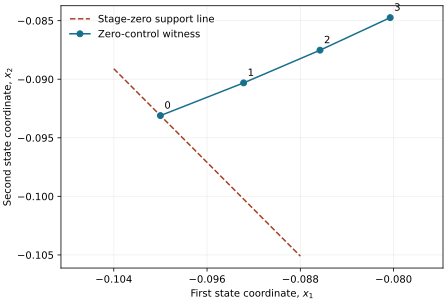

Certify a fixed initial-state support
The Thirty-bank ring starts from a fixed 30-dimensional state. The original three-transition feasible-history sweep returned undetermined for its stage-zero support in direction (−1, −1) on the first two coordinates.

Prove the stage-zero value
Every feasible history starts at the same state. To establish that the stage-zero projection is a singleton, first exhibit a history that satisfies the full domain. The zero-control sequence does this under the archived zero-external forecast. The verifier propagates all three transitions in exact rational arithmetic using the saved binary64 coefficients and checks the state bounds, control bounds and positive-part budgets.
The support is −x1(0) − x2(0) = 13914569883186085 / 72057594037927936 ≈ 0.19310344827586207. The saved HiGHS status remains undetermined. The separate certificate establishes the value for this direction, projection and fixture.
Replay the certificate
Save the verifier, the original evidence and the saved exact certificate in one directory. The verifier uses the Python standard library and checks the original archive’s SHA-256.
python3 verify_support.py > replay.json
diff -u certificate.json replay.jsonUse Matplotlib 3.11.2 and the plot script to regenerate the figure to a separate file. The manifest records the saved asset checksums.
python3 plot_support.py replay.svg